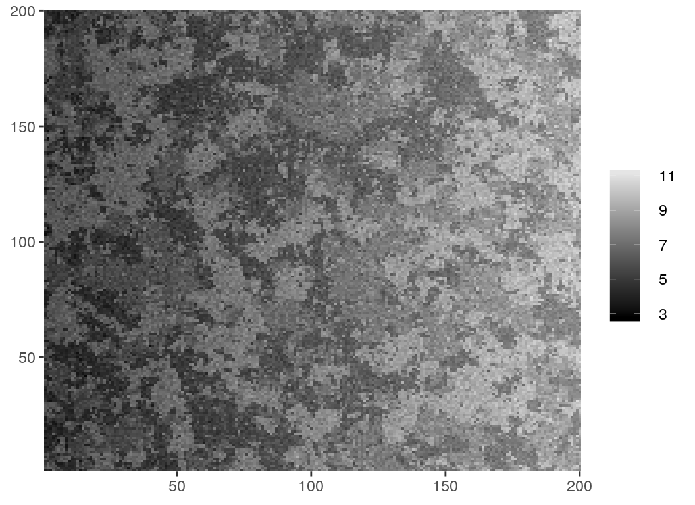

Markov Random Fields are probabilistic models capable of describing sets of random variables with a local dependence property (the Markov property) defined on a neighborhood system. Particularly on the context of image processing, pixels can be seen as vertices of a graph defined on a finite 2-dimensional lattice, and a neighborhood system can be defined based on their relative positions to construct a MRF.

mrf2d is to provide simple functions for sampling and analysis of Markov Random Fields on 2-dimensional lattices, including Hidden Markov Random Fields. It introduces the S4 class mrfi to describe interaction structures in a very general way, being able to adapt from very simple cases like the Ising Model to complex anisotropic models with different types of interaction.


Installation
Currently, the package is only available as a development version on Github. It can be installed with the devtools package by using
The package will be available on CRAN as soon as a reasonable number of features are added and well documented.
Example
This is an example of what type of analysis you can do with mrf2d. More features are also present, including estimation of parameter in Markov Random Fields, families of parameter restrictions and more. Read the package’s vignette for more information and detailed description of the functions used: browseVignettes("mrf2d").
We can define an interaction structure with the mrfi() function:
# We'll include dependence in nearest-neighbors only
int <- mrfi(max_norm = 1)
int
#> 2 interacting positions.
#> rx ry
#> 1 0
#> 0 1
plot(int)We can define a parameter array to sample from a MRF model:
# We have 2 interacting positions and we'll use a 3 color model, therefore,
# an array with dimensions (3,3,3) is used.
theta <- mrf2d:::vec_to_array(-1, family = "onepar", C = 2, n_R = 2)
theta
#> , , 1
#>
#> 0 1 2
#> 0 0 -1 -1
#> 1 -1 0 -1
#> 2 -1 -1 0
#>
#> , , 2
#>
#> 0 1 2
#> 0 0 -1 -1
#> 1 -1 0 -1
#> 2 -1 -1 0In short, the negative values out of diagonal means different “colors” are less likely in that relative position. We can sample from this model with:
set.seed(1)
img_dim <- c(200,200)
Z <- rmrf2d(img_dim, mrfi = int, theta = theta, cycles = 60)
dplot(Z, legend = TRUE)We now add a Gaussian error and a linear effect to the image (to create a hidden Markov Random Field):

We fit a Gaussian hidden Markov random field to recover the components:
set.seed(3)
fit <- fit_ghm(Y, mrfi = int, theta = theta,
fixed_fn = polynomial_2d(c(1,1), dim(Y)), verbose = FALSE)Check the results:
fit$par
#> mu sigma
#> 0 6.010691 0.400807
#> 1 7.011794 0.400807
#> 2 8.013461 0.400807
library(ggplot2)
cplot(fit$fixed) + ggtitle("Linear Effect")
dplot(fit$Z_pred, legend = TRUE) + ggtitle("Predicted Z")
cplot(fit$predicted) + ggtitle("Predicted Value")Contributing and Bug Reports
If you’re interested in contributing or found a bug or error, please file an issue. Contributions can be done in form of code optimization, new ideas, discussing new structures, etc.